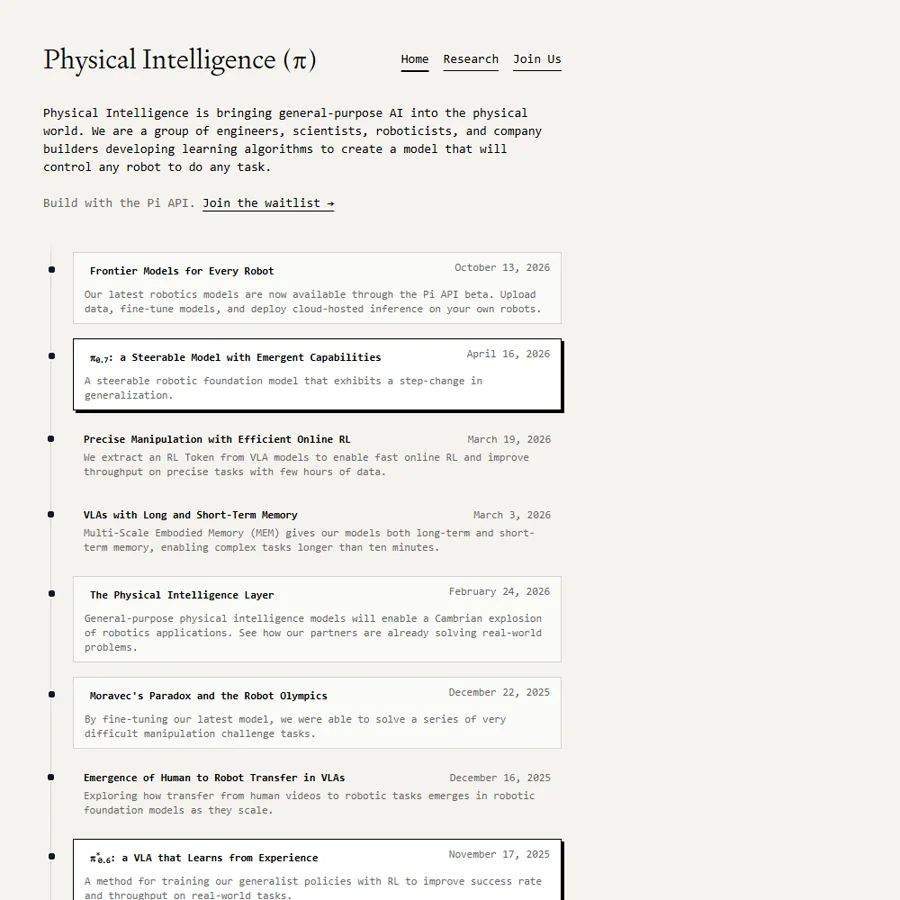
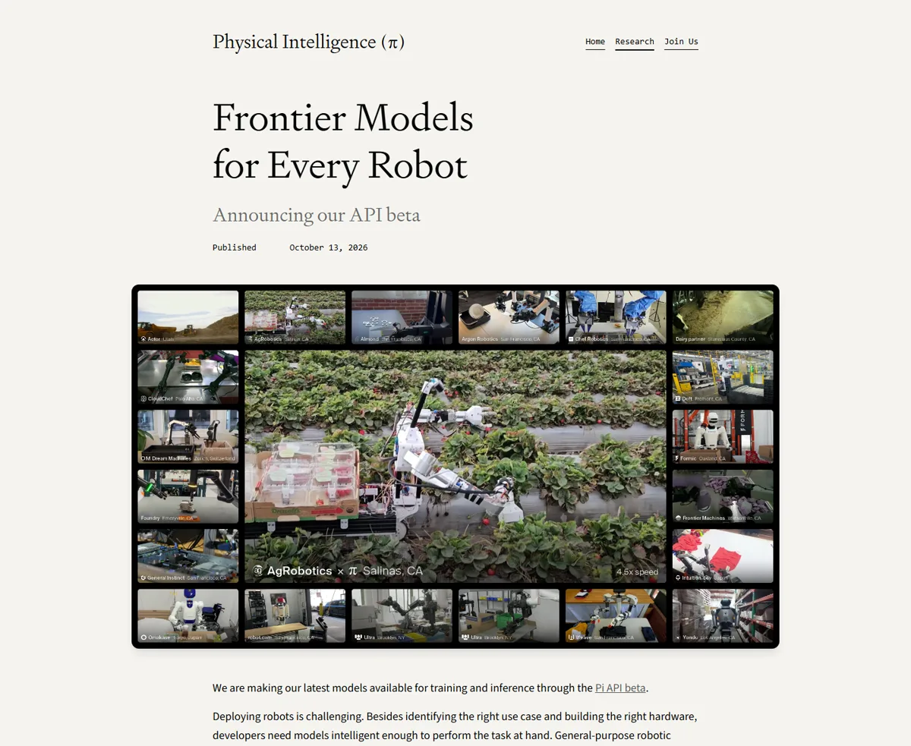
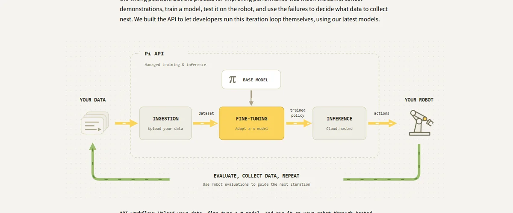

Physical IntelligencePhysical Intelligence Inc.（π）
不造机器人、只做“任何机器人都能用的大脑”：π0 → π0.5 → π*0.6 → π0.7 一年多迭代四代视觉-语言-动作模型，开源 π0，2026-10 推出 Pi API 测试版；成立两年多估值从 24 亿美元涨到洽谈中的约 200 亿美元。
一页结论
- 定位是“物理世界的大模型公司”：对标 LLM 为应用提供智能层，π 想成为机器人行业现成的“物理智能层”，不做自有硬件S3S5
- 模型迭代快、研究影响力大：π0 开源后带动大量学术与创业项目；π0.7 首次展示“组合泛化”，可通过语言逐步指导完成从未训练过的任务，如使用空气炸锅S2S8
- 商业化刚起步：2026-10-13 推出 Pi API 测试版——上传数据、托管微调、云端推理；早期合作方覆盖工程机械、洗衣折叠、电商打包、机器人自组装S4
- 数据飞轮靠合作方：合作方数据加入预训练后，Weave 的抓取失误减少 42%、人工干预减少 50%S3
- 估值增长最快：2024 年约 24 亿美元，2025-11 约 56 亿美元，2026-03 洽谈约 110 亿美元，2026-10 洽谈约 200 亿美元S5S6S7
01公司介绍
| 项目 | 内容 |
|---|---|
| 公司 | Physical Intelligence Inc.，2024-02 成立于旧金山S5 |
| 官网 | pi.websiteS1 |
| 创始团队 | Karol Hausman、Brian Ichter、Quan Vuong（前 Google DeepMind）、Chelsea Finn（斯坦福）、Sergey Levine（伯克利）、Adnan Esmail（前 Anduril）、Lachy GroomS5 |
| 投资方 | Bond、Jeff Bezos、Khosla、Lux、OpenAI、Redpoint、红杉、CapitalG、Thrive 等S1S5 |
| 产品 | π 系列通用机器人模型、openpi 开源代码、Pi API 测试版S1S4S8 |

02公司战略
π 的战略可以用一句话概括：做机器人行业的“基础模型 + API”，而不是做机器人。
- 智能层而不是整机：官方类比开发者做 AI 应用时直接调用大模型 API，机器人开发者也应能直接调用现成的物理智能层S3
- 跨机型通用：模型训练数据来自多种机器人、人类视频和自主运行数据S2
- 开源建立生态：2025-02 开源 π0 权重与代码S1
- 合作方验证 + 数据回流：与部署机器人的公司合作，验证模型在真实场景的表现，并把数据纳入预训练S3S4
03产品定位与产品线
| 产品 | 定位 | 状态 |
|---|---|---|
| π0 | 视觉-语言模型 + 流匹配动作专家，首个通用策略S5 | 已开源S8 |
| π0.5 | 开放世界泛化，在没见过的家里清理厨房和卧室S1 | 已发布S1 |
| π*0.6 | 通过强化学习从经验中提升成功率与吞吐S1 | 合作方部署中S3 |
| π0.7 | 可用语言、元数据、控制方式、视觉子目标多模态提示引导的通用模型S2 | 2026-04 发布S2 |
| Pi API | 上传数据 → 托管微调 → 云端推理 → 评估迭代S4 | 2026-10 测试版，需申请S4 |

04主要功能与技术路线
世界模型
测试时由世界模型生成视觉子目标，帮助视觉泛化S2

05解决方案与场景
06商业模式
与造整机的公司相比，π 的商业模式更接近 OpenAI：不承担硬件制造与库存，收入取决于有多少机器人厂商愿意把“大脑”交给它（分析意见）。
07上下游供应链与渠道
Physical Intelligence
π 系列模型、Pi API、openpi
08主要客户与落地
09营收与财务
π 未披露收入。Pi API 2026-10 才开放测试，此前没有面向市场的商业产品（维基百科称“尚未商业销售”）S5。
10落地痛点
11近期动态
12潜在风险分析意见
| 风险 | 表现 | 可能程度 |
|---|---|---|
| 整机厂自研大脑 | Figure、Tesla 等把模型视为核心护城河，不会外采（分析意见） | 高 |
| 收入兑现 | 估值约 200 亿美元，API 才刚测试（分析意见） | 高 |
| 大厂竞争 | Google DeepMind Gemini Robotics、NVIDIA GR00T 等同样提供机器人模型（分析意见） | 中 |
| 数据获取 | 不造硬件，数据依赖合作方与自采S3 | 中 |
| 开源被追赶 | 开源权重降低了竞争对手门槛（分析意见） | 低 |
“可能程度”为基于现有公开信息的判断，不是量化预测。
13综合结论分析意见
优势
- 顶尖研究团队
- 模型迭代速度
- 开源生态影响力
劣势
- 无硬件、数据依赖合作方
- 收入尚未起步
机会
- 大量中小机器人公司需要现成大脑
- API 化降低行业门槛
威胁
- 整机厂自研
- Google、NVIDIA 的平台化
对 AI 产品团队的启示
- 机器人行业正在出现“大模型 + 应用”的分层：π 押注像 LLM 一样，模型层与应用层分开。
- API 产品的核心是迭代闭环，不是一次调用：Pi API 把“采数据—微调—推理—评估”做成托管流程，这才是开发者真正的痛点。
- 合作方数据回流是模型公司的护城河：数据加入预训练带来 42%–50% 的改进，让合作方和模型公司都受益。
- 用案例数据说话：96.4% 自主率、4 天迭代出可用模型，这类具体指标比演示视频更能说服 B 端客户。
信息缺口
以下信息未找到可靠的公开来源，本报告不做推测。
- 收入与 API 定价
- 2026 年两轮融资是否完成
- API 测试版的客户数量
- 训练算力供应商与规模
- 自采数据的规模
来源
A 官方 · B 权威媒体或第三方 · C 社区（仅用于口碑与线索）。访问日期均为 2026-11-02。
- S1 · Aπ 官网首页（研究与发布列表）Physical Intelligence · 2026-11-02 访问
- S2 · Aπ0.7: a Steerable Model with Emergent CapabilitiesPhysical Intelligence · 2026-04-16
- S3 · AThe Physical Intelligence Layer（Weave、Ultra 案例）Physical Intelligence · 2026-02-24
- S4 · AFrontier Models for Every Robot: Announcing our API betaPhysical Intelligence · 2026-10-13
- S5 · CPhysical Intelligence Inc.Wikipedia · 2026-11-02 访问
- S6 · BEx-DeepMind Staffers' Robotics Startup in Talks for $11 Billion ValuationBloomberg · 2026-03-27
- S7 · BPhysical Intelligence in Talks to Raise Funding at $20 Billion ValuationBloomberg · 2026-10-27
- S8 · APhysical-Intelligence/openpiGitHub · 2026-11-02 访问